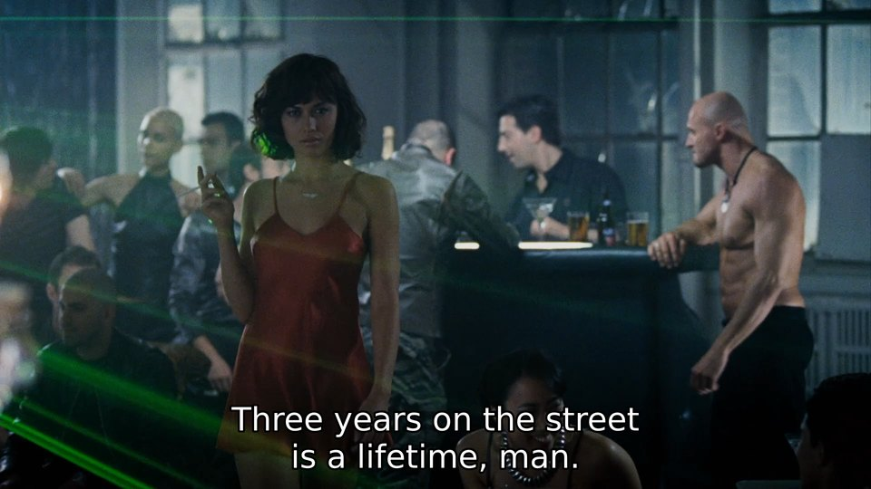

| Volumetric Lighting in Max Payne (2008) |
|---|
|
 |
Selected Projects
https://github.com/aabbtree77/adast
A joint work with Saulius Rakauskas (Infovega). He dissected hardware, designed the board and prepared factory requirements, I wrote microcontroller code in C (avr-gcc). This marvel machine (repaired by us in 2020) is still in operation (2022).
https://github.com/aabbtree77/esp32-mqtt-experiments
IoT with ESP32, MQTT and MicroPython. Despite a very low RAM and limited software, ESP32 enables one to control sensors over Wi-Fi, even with resilience. It is a better (cheaper and more hassle-free) technology than AVR or embedded Linux, but only for this exact minimal purpose. ESP32 is suboptimal as a server, retro/mini computer or a generic minimal non-Wi-Fi microcontroller, but this is a step in the right direction, albeit 40 years later. Dan Ingalls: "An operating system is a collection of things that don't fit into a language. There shouldn't be one.", 1981.
https://github.com/aabbtree77/twinpeekz
A full volumetric lighting in Go (forward rendering, shadow mapping) following the C/C++ work of Balázs Tóth, Tamás Umenhoffer (2009) and Tomas Öhberg (2017), keeping an eye on INSIDE 2016 and Red Dead Redemption 2. The code exposes the impact of Go's GC in a realistic (multi-pass, PBR-based) OpenGL render pipeline.
I would now ditch Go for Nim or even go for Zig+WebGPU, some day. The unsung hero is Baldur Karlsson, the creator of RenderDoc.
“Now if you want to do this little dance here for old times sake, Jack, bring it. You're gonna end up like a one-legged man in an ass-kicking contest.” |
- Get Carter, 2000 |
https://github.com/aabbtree77/MNIST-0.17
Jonas Matuzas' CNN model is the most convincing result in the MNIST digit recognition. You can find some further details in this git fork.
https://diglib.eg.org/handle/10.2312/3dor.20141044.009-015
PostDoc Chronicles 3: Lugano, 2013-2014. I managed to map the "Unroll the Swiss Roll" problem to electrostatics + approximate constraint handling via simple projections ala Karmarkar and Cimmino in linear algebra. Davide Boscaini handled the constraint gradient exactly, pushed the error rates, and we got a publication. Davide Eynard should have been there as the coauthor too, we were all working side by side. A 3D guru Randolf Schärfig bent those finger meshes for us in Blender.
https://hal.archives-ouvertes.fr/hal-00723427
PostDoc Chronicles 2: Saint-Étienne, 2012-2013. One of my best research experiences. The project had literally everything: An automotive industry simulation implemented before me with OpenFOAM, CATIA, STAR CCM+ and ParaView running on the ProActive PACA Grid (INRIA) cloud via a Scilab-to-Java bridge managed by Fabien Viale. There was plenty of Gaussian modeling with some low hanging fruit in the form of the MC integration. An amazing long chain of ideas where so much comes together. A niche problem and so much complexity though.
To describe the optimization approach/problem, a simple analogy will suffice: Imagine moving in a 3D game faster than the world around you being generated, you may get stuck inside walls or places that cannot be escaped. In order to faster predict the next optimal candidate batch, one reads the available cloud node result immediately, but the multi-point world is not loaded yet. One can see how this is resolved in the report aiming at a synchronous progress just running faster/asynchronously.
Unpublished
PostDoc Chronicles 1: Los Angeles, 2008-2009. A failure, though rank arguments and Eq. 30 came up somewhat unexpectedly. The ability to linearize a problem and investigate its Jacobian structure is underrated, but I could not make it into a bigger program.
| Ramunas Girdziusas, D.Sc. (Tech.) |
|---|

|
https://aaltodoc.aalto.fi/handle/123456789/2999
My DSc (PhD) thesis, Espoo 2002-2008. Essentially, it is this IJCNN-2005 paper slightly improved with ICCV2007 and ACCV2007. A good test case could have been the bilateral upscaling stage in volumetric light rendering.
These days one pytorches these models, e.g. by wrapping filters into transformer networks. One may optimize the diffusivities as well.
“You're a picture on a piano.” |
- Get Carter, 2000 |
Bookmarks
E.A. Coddington, R. Carlson. Linear Ordinary Differential Equations, 1997
П.А. Жилин. Модифицированная теория симметрии тензоров и тензорных инвариантов, 2003
Portrait de la jeune fille en feu, 2019
...
| Ilja Kabakov. The Man who Flew Into Space from His Apartment, 1986 |
|---|

|